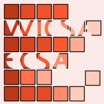
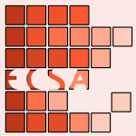
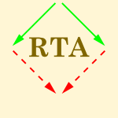

184 papers:
- QoSA-2015-MyllarniemiRM #configuration management #product line #representation #security #variability
- Representing and Configuring Security Variability in Software Product Lines (VM, MR, TM), pp. 1–10.
 STOC-2015-HalldorssonT #graph #how #question
STOC-2015-HalldorssonT #graph #how #question- How Well Can Graphs Represent Wireless Interference? (MMH, TT), pp. 635–644.
 ICSE-2015-SalmanMJ #question #re-engineering #student
ICSE-2015-SalmanMJ #question #re-engineering #student- Are Students Representatives of Professionals in Software Engineering Experiments? (IS, ATM, NJJ), pp. 666–676.
 ICML-2015-GalT #approximate #nondeterminism #process #representation
ICML-2015-GalT #approximate #nondeterminism #process #representation- Improving the Gaussian Process Sparse Spectrum Approximation by Representing Uncertainty in Frequency Inputs (YG, RT), pp. 655–664.
 SEKE-2015-NetoSZD #network #using
SEKE-2015-NetoSZD #network #using- Using implications from FCA to represent a two mode network data (SMN, MAJS, LEZ, SMD), pp. 256–259.
 SIGIR-2015-MehrotraY #learning #query #rank #using
SIGIR-2015-MehrotraY #learning #query #rank #using- Representative & Informative Query Selection for Learning to Rank using Submodular Functions (RM, EY), pp. 545–554.
 SAC-2015-SilvaBAR #clustering #multi #prototype #using
SAC-2015-SilvaBAR #clustering #multi #prototype #using- Semi-supervised clustering using multi-assistant-prototypes to represent each cluster (WJS, MCNB, SdA, HLR), pp. 831–836.
- SAC-2015-ZappatoreLB #composition #contract #network #representation
- SLA composition in service networks: a tool for representing relationships between SLAs and contracts (MZ, AL, MAB), pp. 1219–1224.
 CSL-2015-MolinariMP #logic #model checking
CSL-2015-MolinariMP #logic #model checking- A Model Checking Procedure for Interval Temporal Logics based on Track Representatives (AM, AM, AP), pp. 193–210.
 LICS-2015-PaulyB #set
LICS-2015-PaulyB #set- Descriptive Set Theory in the Category of Represented Spaces (AP, MdB), pp. 438–449.
 CHI-2014-LeivaS #empirical #set
CHI-2014-LeivaS #empirical #set- Representatively memorable: sampling the right phrase set to get the text entry experiment right (LAL, GST), pp. 1709–1712.
 SCSM-2014-FardounAC #education #network #representation #social #student
SCSM-2014-FardounAC #education #network #representation #social #student- Representing Students Curriculum in Social Networks (HMF, AA, APC), pp. 48–58.
- SCSM-2014-WhittyDCH #image #online
- Image Choice to Represent the Self in Different Online Environments (MTW, JD, SC, DH), pp. 528–537.
 ICSME-2014-Syer #evolution #maintenance #performance #testing
ICSME-2014-Syer #evolution #maintenance #performance #testing- The Maintenance and Evolution of Field-Representative Performance Tests (MDS), p. 665.
 ICPR-2014-WangYWWL
ICPR-2014-WangYWWL- Discriminative Representative Selection via Structure Sparsity (BW, QY, SW, LW, GL), pp. 1401–1406.
- SAC-2014-CaetanoAGA #recognition #representation #visual notation
- Representing local binary descriptors with BossaNova for visual recognition (CC, SEFdA, SJFG, AdAA), pp. 49–54.
 DLT-J-2012-HromkovicKKS13 #automaton #logic #nondeterminism #representation
DLT-J-2012-HromkovicKKS13 #automaton #logic #nondeterminism #representation- Determinism vs. Nondeterminism for Two-Way Automata: Representing the Meaning of States by Logical Formulæ (JH, RK, RK, RS), pp. 955–978.
- CHI-2013-KatoSI #named #representation #source code
- Picode: inline photos representing posture data in source code (JK, DS, TI), pp. 3097–3100.
- HCI-UC-2013-RodilJRW #identification #representation
- Identifying and Representing Elements of Local Contexts in Namibia (KR, KLJ, MR, HWT), pp. 332–341.
- HIMI-D-2013-MogawaSI #algorithm #product line #representation #set
- Generalized Algorithm for Obtaining a Family of Evaluating Attributes’ Sets Representing Customer’s Preference (TM, FS, SI), pp. 494–504.
- ICML-c3-2013-GuptaAM #image
- Natural Image Bases to Represent Neuroimaging Data (AG, MA, AM), pp. 987–994.
 KDIR-KMIS-2013-NcirE #clustering #question
KDIR-KMIS-2013-NcirE #clustering #question- On the Extension of k-Means for Overlapping Clustering — Average or Sum of Clusters’ Representatives? (CEBN, NE), pp. 208–213.
- SEKE-2013-GayedLB #case study #forensics #process #representation
- Representing Chains of Custody Along a Forensic Process: A Case Study on Kruse Model (TFG, HL, MB), pp. 674–680.
- SIGIR-2013-SondakSK #query
- Estimating query representativeness for query-performance prediction (MS, AS, OK), pp. 853–856.
- SKY-2013-Gomes #how #ontology #recommendation #representation #using
- Representing Knowledge using Ontologies: How Search, Browse and Recommendation Can Be Performed (PG), pp. 1–3.
- SAC-2013-Barros #component #representation
- Representing dynamic pluggable software units (FB), pp. 1006–1012.
- DLT-2012-HromkovicKKS #automaton #logic #nondeterminism #representation
- Determinism vs. Nondeterminism for Two-Way Automata — Representing the Meaning of States by Logical Formulæ (JH, RK, RK, RS), pp. 24–39.
- CHI-2012-KongGHAF #named #representation
- Delta: a tool for representing and comparing workflows (NK, TG, BH, MA, GWF), pp. 1027–1036.
- CHI-2012-OyekoyaSS #named
- SphereAvatar: a situated display to represent a remote collaborator (OO, WS, AS), pp. 2551–2560.
- CHI-2012-SongQ #representation
- Representing “too small to see” as “too small to see” with temporal representation (MS, CQ), pp. 1441–1450.
- CHI-2012-YataniBT #feedback #named #people #representation #using #visual notation
- SpaceSense: representing geographical information to visually impaired people using spatial tactile feedback (KY, NB, KNT), pp. 415–424.
- KMIS-2012-ThonssenL #approach #contract #semantics
- Semantically Enriched Obligation Management — An Approach for Improving the Handling of Obligations Represented in Contracts (BT, JL), pp. 40–48.
 ECMFA-2012-KuhlmannG #modelling #ocl #representation #sat #uml #validation
ECMFA-2012-KuhlmannG #modelling #ocl #representation #sat #uml #validation- Strengthening SAT-Based Validation of UML/OCL Models by Representing Collections as Relations (MK, MG), pp. 32–48.
- SAC-2012-SoLJHL
- Extending Open Directory Project to represent user interests (SS, JHL, DJ, JH, SL), pp. 354–359.
 TOOLS-EUROPE-2012-OlahMS #constraints #framework #representation
TOOLS-EUROPE-2012-OlahMS #constraints #framework #representation- Representing Uniqueness Constraints in Object-Relational Mapping — The Natural Entity Framework (MJO, DM, DS), pp. 236–251.
 LATA-2011-ReidenbachS #memory management #scheduling #word
LATA-2011-ReidenbachS #memory management #scheduling #word- Finding Shuffle Words That Represent Optimal Scheduling of Shared Memory Access (DR, MLS), pp. 465–476.
- CHI-2011-PaekH #set
- Sampling representative phrase sets for text entry experiments: a procedure and public resource (TP, BJPH), pp. 2477–2480.
- CHI-2011-SearsH #representation #research
- Representing users in accessibility research (AS, VLH), pp. 2235–2238.
- HCI-MIIE-2011-HwangKAJ #representation
- Factors for Representing In-Vehicle Roominess (WH, NHK, HJA, HSJ), pp. 386–390.
 CIKM-2011-WangNSTC #clustering #dependence #documentation #graph #representation
CIKM-2011-WangNSTC #clustering #dependence #documentation #graph #representation- Representing document as dependency graph for document clustering (YW, XN, JTS, YT, ZC), pp. 2177–2180.
 ECIR-2011-PeregoST #documentation #identifier #representation
ECIR-2011-PeregoST #documentation #identifier #representation- Representing Document Lengths with Identifiers (RP, FS, NT), pp. 665–669.
- SAC-2011-CostaLGR #representation
- Representing a bilingual lexicon with suffix trees (JC, GPL, LG, LMSR), pp. 1164–1165.
 ICLP-2011-CasolaryL #programming #representation #set
ICLP-2011-CasolaryL #programming #representation #set- Representing the Language of the Causal Calculator in Answer Set Programming (MC, JL), pp. 51–61.
- STOC-2010-Sherstov #bound
- Optimal bounds for sign-representing the intersection of two halfspaces by polynomials (AAS), pp. 523–532.
 SOFTVIS-2010-SteinbrucknerL #development #representation
SOFTVIS-2010-SteinbrucknerL #development #representation- Representing development history in software cities (FS, CL), pp. 193–202.
- ICSE-2010-SongHCSM #modelling #representation #runtime
- SM@RT: representing run-time system data as MOF-compliant models (HS, GH, FC, YS, HM), pp. 303–304.
- CIKM-2010-RaiberK #documentation #identification
- On identifying representative relevant documents (FR, OK), pp. 99–108.
- ICPR-2010-IgelmoSF #graph #representation
- A Conductance Electrical Model for Representing and Matching Weighted Undirected Graphs (MI, AS, MF), pp. 958–961.
 KEOD-2010-MollerSBEDS #classification #owl #representation
KEOD-2010-MollerSBEDS #classification #owl #representation- Representing the International Classification of Diseases Version 10 in OWL (MM, MS, RB, PE, AD, DS), pp. 50–59.
- KEOD-2010-NeumaierS #framework #representation
- A Framework for Representing and Processing Arbitrary Mathematics (AN, PS), pp. 476–479.
 LOPSTR-2010-LlorensOST #csp #generative #graph #process
LOPSTR-2010-LlorensOST #csp #generative #graph #process- Graph Generation to Statically Represent CSP Processes (ML, JO, JS, ST), pp. 52–66.
- SAC-2010-HogenboomFK #bibliography #owl #representation
- A review of approaches for representing RCC8 in OWL (FH, FF, UK), pp. 1444–1445.
- SAC-2010-Volz #metamodelling #representation
- A meta model for representing arbitrary meta model hierarchies (BV), pp. 2371–2372.
- WICSA-ECSA-2009-CarignanoGL #architecture #design
- A model to represent architectural design rationale (MCC, SG, HPL), pp. 301–304.
 ICALP-v1-2009-Golovin #named
ICALP-v1-2009-Golovin #named- B-Treaps: A Uniquely Represented Alternative to B-Trees (DG), pp. 487–499.
- LATA-2009-BoigelotD #automaton #set #visualisation
- Partial Projection of Sets Represented by Finite Automata, with Application to State-Space Visualization (BB, JFD), pp. 200–211.
- HCI-NT-2009-MaeshiroMSN #performance #similarity
- Hypernetwork Model to Represent Similarity Details Applied to Musical Instrument Performance (TM, MM, KS, SiN), pp. 866–873.
- HIMI-II-2009-Matsak #logic #representation
- Representing Logical Inference Steps with Digital Circuits (EM), pp. 178–184.
- ICPC-2009-AuprasertL #representation #source code
- Representing source code with Granular hierarchical structures (BA, YL), pp. 319–320.
- ICSE-2009-KimN #representation
- Discovering and representing systematic code changes (MK, DN), pp. 309–319.
- ECIR-2009-AliCL #navigation #representation #retrieval #xml
- Representing User Navigation in XML Retrieval with Structural Summaries (MSA, MPC, BL), pp. 719–723.
- KDIR-2009-GabadinhoRSM #category theory #sequence #set #visualisation
- Summarizing Sets of Categorical Sequences — Selecting and Visualizing Representative Sequences (AG, GR, MS, NSM), pp. 62–69.
 MLDM-2009-GoncalvesQ #classification #kernel #semantics #using
MLDM-2009-GoncalvesQ #classification #kernel #semantics #using- Using Graph-Kernels to Represent Semantic Information in Text Classification (TG, PQ), pp. 632–646.
- SAC-2009-PivetaPAMGP #refactoring #representation
- Representing refactoring opportunities (EKP, MSP, JA, AMDM, PG, RTP), pp. 1867–1872.
 TLCA-2009-Atkey #for free #representation #syntax #using
TLCA-2009-Atkey #for free #representation #syntax #using- Syntax for Free: Representing Syntax with Binding Using Parametricity (RA), pp. 35–49.
- ECSA-2008-SanzQCMO #architecture #modelling #representation #using
- Representing Service-Oriented Architectural Models Using pi-ADL (MLS, ZQ, CEC, EM, FO), pp. 273–280.
 CSCW-2008-RibesF #community #representation
CSCW-2008-RibesF #community #representation- Representing community: knowing users in the face of changing constituencies (DR, TAF), pp. 107–116.
- SOFTVIS-2008-CottamHL #development #representation #scalability #testing
- Representing unit test data for large scale software development (JAC, JH, AL), pp. 57–66.
- ICSM-2008-KinneerR #algorithm #control flow #java #maintenance #representation #type inference
- Assessing the usefulness of type inference algorithms in representing Java control flow to support software maintenance tasks (AK, GR), pp. 127–136.
- CIKM-2008-ChenLYH #approach #effectiveness #graph
- On effective presentation of graph patterns: a structural representative approach (CC, CXL, XY, JH), pp. 299–308.
- CIKM-2008-ZhuangHSJ #profiling
- Representative entry selection for profiling blogs (JZ, SCHH, AS, RJ), pp. 1387–1388.
- ICPR-2008-ChenSSL #image #recognition
- Representative feature chain for single gallery image face recognition (SC, CS, SS, BCL), pp. 1–4.
- ICPR-2008-GhoshB #evolution #how #pattern matching #pattern recognition #problem #recognition
- How current BNs fail to represent evolvable pattern recognition problems and a proposed solution (NG, BB), pp. 1–4.
- ICPR-2008-MaWHJG #effectiveness
- Effective scene matching with local feature representatives (SM, WW, QH, SJ, WG), pp. 1–4.
- ICPR-2008-MohantaSC #detection #multi #using
- Detection of representative frames of a shot using multivariate Wald-Wolfowitz test (PPM, SKS, BC), pp. 1–4.
- SEKE-2008-IlievaB #diagrams #generative #natural language #representation #requirements #uml #visual notation
- Representing Textual Requirements as Graphical Natural Language for UML Diagram Generation (MI, HB), pp. 478–483.
- SIGIR-2008-HueteCFR #modelling #representation
- Hierarchical naive bayes models for representing user profiles (JFH, LMdC, JMFL, MARM), pp. 711–712.
 WCRE-2008-RothlisbergerG #ide #representation
WCRE-2008-RothlisbergerG #ide #representation- Representing and Integrating Dynamic Collaborations in IDEs (DR, OG), pp. 74–78.
- TOOLS-EUROPE-2008-RiveraV #difference #representation
- Representing and Operating with Model Differences (JER, AV), pp. 141–160.
- WRLA-J-2004-CervesatoS07 #dependent type #logic #representation #specification
- Representing the MSR cryptoprotocol specification language in an extension of rewriting logic with dependent types (IC, MOS), pp. 3–35.
 CIAA-2007-JonoskaP #2d #automaton #representation
CIAA-2007-JonoskaP #2d #automaton #representation- Finite State Automata Representing Two-Dimensional Subshifts (NJ, JBP), pp. 277–289.
- SEKE-2007-MedeirosS #design #representation #reuse
- Representing Design Rationale to support Reuse (APdM, DS), p. 332–?.
- SEKE-2007-SettasS #ontology #project management #using
- Using Ontologies to Represent Software Project Management Antipatterns (DS, IS), pp. 604–609.
- SAC-2007-CaetanoPT #representation
- Representing organizational competencies (AC, JP, JMT), pp. 1257–1262.
 FASE-2006-MinK #automation #component
FASE-2006-MinK #automation #component- A Technique to Represent and Generate Components in MDA/PIM for Automation (HGM, SDK), pp. 293–307.
- DLT-2006-BastienCFR #context-free grammar
- Equivalence of Functions Represented by Simple Context-Free Grammars with Output (CB, JC, WF, WR), pp. 71–82.
- CIKM-2006-ShahCJ #detection #documentation #representation
- Representing documents with named entities for story link detection (SLD) (CS, WBC, DJ), pp. 868–869.
- CIKM-2006-VardeRRBMS #clustering #semantics
- Designing semantics-preserving cluster representatives for scientific input conditions (ASV, EAR, CR, DCB, MM, RDSJ), pp. 708–717.
- ICPR-v2-2006-ScalzoP #learning
- Unsupervised Learning of Dense Hierarchical Appearance Represe (FS, JHP), pp. 395–398.
- ICPR-v3-2006-ZhuW #ranking #scalability
- Scalable Representative Instance Selection and Ranking (XZ, XW), pp. 352–355.
- ICPR-v4-2006-ChenJY06a #detection #distributed #fault
- Fault Detection in Distributed Systems by Representative Subspace Mapping (HC, GJ, KY), pp. 912–915.
- SIGIR-2006-LiuC #clustering #representation #retrieval
- Representing clusters for retrieval (XL, WBC), pp. 671–672.
- WCRE-2006-RatiuD #how #source code
- How Programs Represent Reality (and how they don’t) (DR, FD), pp. 83–92.
 SPLC-2006-Scheidemann #distributed #embedded #evolution #optimisation #product line #verification
SPLC-2006-Scheidemann #distributed #embedded #evolution #optimisation #product line #verification- Optimizing the Selection of Representative Configurations in Verification of Evolving Product Lines of Distributed Embedded Systems (KDS), pp. 75–84.
- WRLA-2004-CervesatoS05 #dependent type #logic #representation #specification
- Representing the MSR Cryptoprotocol Specification Language in an Extension of Rewriting Logic with Dependent Types (IC, MOS), pp. 183–207.
- STOC-2005-Ajtai #representation
- Representing hard lattices with O(n log n) bits (MA), pp. 94–103.
- CIAA-2005-Latour #diagrams #set
- Computing Affine Hulls over Q and Z from Sets Represented by Number Decision Diagrams (LL), pp. 213–224.
 MoDELS-2005-MiliE #design pattern #problem #question #representation #what
MoDELS-2005-MiliE #design pattern #problem #question #representation #what- Representing and Applying Design Patterns: What Is the Problem? (HM, GEB), pp. 186–200.
- SAC-2005-BazizBAC #documentation #representation #semantics
- Semantic cores for representing documents in IR (MB, MB, NAG, CC), pp. 1011–1017.
- WCRE-2005-MoiseW #dependence #representation
- Extracting and Representing Cross-Language Dependencies in Diverse Software Systems (DLM, KW), pp. 209–218.
- ICALP-2004-AbbottAG #induction #representation #using
- Representing Nested Inductive Types Using W-Types (MA, TA, NG), pp. 59–71.
 ICGT-2004-Rensink #first-order #graph #logic #representation #using
ICGT-2004-Rensink #first-order #graph #logic #representation #using- Representing First-Order Logic Using Graphs (AR), pp. 319–335.
- ICPR-v4-2004-IkeuchiNHO #representation
- Representing Cultural Heritage in Digital Forms for VR Systems through Computer Vision Techniques (KI, AN, KH, TO), pp. 1–6.
- SIGIR-2004-Sun #comprehension #representation
- Discovering and representing the contextual and narrative structure of e-books to support reading and comprehension (abstract only) (YS), p. 603.
- SAC-2004-PinhoT #image #physics #using
- Morphing of image represented objects using a physical methodology (RRP, JMRST), pp. 10–15.
- TACAS-2003-EsparzaM #multi #protocol
- Simple Representative Instantiations for Multicast Protocols (JE, MM), pp. 128–143.
- CIKM-2003-FisherE #documentation #representation
- Representing interests as a hyperlinked document collection (MF, RME), pp. 378–385.
- ECIR-2003-XuYTXW #classification #using
- Representative Sampling for Text Classification Using Support Vector Machines (ZX, KY, VT, XX, JW), pp. 393–407.
- SEKE-2003-WangZ #database #evolution #query #representation #xml
- Representing and Querying the Evolution of Databases and their Schemas in XML (FW, CZ), pp. 33–38.
 UML-2003-CabotOT #representation #uml
UML-2003-CabotOT #representation #uml- Representing Temporal Information in UML (JC, AO, ET), pp. 44–59.
- SAC-2003-Dong #composition #design pattern #representation #uml
- Representing the Applications and Compositions of Design Patterns in UML (JD), pp. 1092–1098.
 CAISE-2002-FilhaSLE #query #representation #using #web
CAISE-2002-FilhaSLE #query #representation #using #web- Using Nested Tables for Representing and Querying Semistructured Web Data (IMREF, ASdS, AHFL, DWE), pp. 719–723.
- CAISE-2002-StavrakasG #multi #representation #semistructured data #web
- Multidimensional Semistructured Data: Representing Context-Dependent Information on the Web (YS, MG), pp. 183–199.
 SAS-2002-Jeannet #abstract interpretation #approximate #data type #representation
SAS-2002-Jeannet #abstract interpretation #approximate #data type #representation- Representing and Approximating Transfer Functions in Abstract Interpretation of Hetereogeneous Datatypes (BJ), pp. 52–68.
- SAS-2002-ManevichRFGS #first-order #representation #static analysis
- Compactly Representing First-Order Structures for Static Analysis (RM, GR, JF, DG, SS), pp. 196–212.
- CIKM-2002-LiuYM02a
- Discovering the representative of a search engine (KLL, CTY, WM), pp. 652–654.
- ICPR-v2-2002-SaalbachHR #representation
- Representing Object Manifolds by Parametrized SOMs (AS, GH, HJR), pp. 184–187.
- ICPR-v3-2002-ZhouK #representation #set #using
- Representing and Recognizing Complete Set of Geons Using Extended Superquadrics (LZ, CK), pp. 713–718.
- SEKE-2002-FarinaFO #automaton #modelling #network #probability #representation
- Representing software usage models with stochastic automata networks (AGF, PF, FMO), pp. 401–407.
- SPLC-2002-JaringB #case study #product line #representation #variability
- Representing Variability in Software Product Lines: A Case Study (MJ, JB), pp. 15–36.
- ICLP-2002-BoigelotW #automaton #constraints #representation
- Representing Arithmetic Constraints with Finite Automata: An Overview (BB, PW), pp. 1–19.
 ICFP-2001-Pitts #approach #functional #programming #representation #syntax
ICFP-2001-Pitts #approach #functional #programming #representation #syntax- A Fresh Approach to Representing Syntax with Static Binders in Functional Programming (AMP), p. 1.
- IWPC-2001-LuccaFC #algebra #comprehension #object-oriented #representation #thread
- An Algebraic Notation for Representing Threads in Object Oriented Software Comprehension (GADL, ARF, UdC), pp. 176–185.
- ICSE-2001-ZhangS #integration #named #representation #xml
- Babel: Representing Business Rules in XML for Application Integration (HZ, ES), pp. 831–832.
- ICSM-2001-CoxC #information management #representation
- Representing and Accessing Extracted Information (AC, CLAC), pp. 12–21.
- CIKM-2001-LiuYMS
- Discovering the Representative of a Search Engine (KLL, CTY, WM, AS), pp. 577–579.
- UML-2001-LatronicoK #diagrams #embedded #formal method #representation #sequence chart
- Representing Embedded System Sequence Diagrams as a Formal Language (EL, PK), pp. 302–316.
 ASE-2000-BarberB #design #process #representation #reuse
ASE-2000-BarberB #design #process #representation #reuse- Representing Technology to Promote Reuse in the Software Design Process (KSB, SB), pp. 285–288.
- AdaEurope-2000-ChenL #set
- On the Minimal Essential Subsets and Minimal Representative Sets (TYC, MFL), pp. 291–301.
- UML-2000-VilainSS #diagrams #interactive #representation #uml
- A Diagrammatic Tool for Representing User Interaction in UML (PV, DS, CSdS), pp. 133–147.
- CL-2000-Benini #representation
- Representing Object Code (MB), pp. 538–552.
- CL-2000-CurryWH #constraints #representation
- Representing Trees with Constraints (BC, GAW, GH), pp. 315–325.
- ICFP-1999-LeagueST #java #representation
- Representing Java Classes in a Typed Intermediate Language (CL, ZS, VT), pp. 183–196.
 POPL-1999-Filinski #monad #representation
POPL-1999-Filinski #monad #representation- Representing Layered Monads (AF), pp. 175–188.
- CSCW-1998-PycockPAB #representation #requirements
- Representing Fieldwork and Articulating Requirements Through VR (JP, KP, JA, GB), pp. 383–392.
- ICPR-1998-Aranda-GarridoGF #2d #image #normalisation #representation
- Representing 2D digital images through a normalized measure of redundancy (MCAG, JAG, JFV), pp. 42–46.
- ICPR-1998-HerbstM #set
- Building a representative training set based on eigenimages (BMH, NLM), pp. 1846–1848.
- ICPR-1998-KatoTI #navigation #representation
- Representing environment through target-guided navigation (KK, ST, HI), pp. 1794–1798.
 ISSTA-1998-MitchellZ #empirical #testing
ISSTA-1998-MitchellZ #empirical #testing- An Experiment in Estimating Reliability Growth Under Both Representative and Directed Testing (BM, SJZ), pp. 32–41.
- DLT-1997-Raeva #ambiguity #logic #semantics
- Semantic Interpretation of Ambiguous Statements, Represented in a Logical Form (IR), pp. 529–537.
 PLDI-1996-BruggemanWD #continuation #representation
PLDI-1996-BruggemanWD #continuation #representation- Representing Control in the Presence of One-Shot Continuations (CB, OW, RKD), pp. 99–107.
- ICSE-1996-MitchellZ #testing
- A Reliability Model Combining Representative and Directed Testing (BM, SJZ), pp. 506–514.
- ICML-1996-Perez #learning #representation
- Representing and Learning Quality-Improving Search Control Knowledge (MAP), pp. 382–390.
- ICPR-1996-AguadoMN #geometry
- Extracting arbitrary geometric primitives represented by Fourier descriptors (ASA, EM, MSN), pp. 547–551.
- ICPR-1996-HuangDMN #image #representation
- Segmenting and representing background in color images (QH, BD, NM, WN), pp. 13–17.
- SAC-1996-Julstom #algorithm #representation #search-based
- Representing rectilinear Steiner trees in genetic algorithms (BAJ), pp. 245–250.
- JICSLP-1996-SakamaI #logic programming #representation #source code
- Representing Priorities in Logic Programs (CS, KI), pp. 82–96.
- RTA-1996-Stuber #integer #proving #theorem proving
- Superposition Theorem Proving for Albelian Groups Represented as Integer Modules (JS), pp. 33–47.
- KBSE-1995-DeLoachBH #modelling #representation
- Representing Object Models as Theories (SAD, PDB, TCH), pp. 28–35.
- ICALP-1995-Balcazar #complexity #graph
- The Complexity of Searching Succinctly Represented Graphs (JLB), pp. 208–219.
- SEKE-1995-Gattiker #functional #petri net #probability #representation
- Representing Structural and Functional Knowledge with Stochastic Petri Nets (JRG), pp. 47–53.
- ICLP-1995-Gegg-Harrison #logic programming #prolog #representation
- Representing Logic Program Schemata in λ-Prolog (TSGH), pp. 467–481.
- CIKM-1994-ArensK #representation #reuse
- Intelligent Caching: Selecting, Representing, and Reusing Data in an Information Server (YA, CAK), pp. 433–438.
- SEKE-1994-CairoGB #formal method #multi #representation
- A formal methodology for acquiring and representing knowledge from multiple experts (OC, SG, TB), pp. 281–288.
- POPL-1994-Filinski #monad #representation
- Representing Monads (AF), pp. 446–457.
 OOPSLA-1994-Onodera #c++ #database #information management #object-oriented #representation
OOPSLA-1994-Onodera #c++ #database #information management #object-oriented #representation- Experience with Representing C++ Program Information in an Object-Oriented Database (TO), pp. 403–413.
- ICLP-1994-BelleghemDS #abduction #calculus #representation
- Representing Continuous Change in the Abductive Event Calculus (KVB, MD, DDS), pp. 225–239.
- ICLP-1994-Thielscher #equation #logic programming #representation
- Representing Actions in Equational Logic Programming (MT), pp. 207–224.
- HCI-SHI-1993-ChaseHHSB #behaviour #design #representation #user interface
- A Model of Behavioral Techniques for Representing User Interface Designs (JDC, HRH, DH, RSS, JLB), pp. 861–866.
- TRI-Ada-1993-Cernosek #ada #modelling #named #representation
- ROMAN-9X: A Technique for Representing Object Models in Ada 9X Notation (GJC), pp. 385–406.
- TRI-Ada-1993-Nickerson #ada #design #representation #using #visual notation
- Visual Conventions for System Design Using Ada 9X: Representing Asynchronous Transfer of Control (JVN), pp. 379–384.
- CSM-1993-Talbert #assurance #quality
- Representative Sampling Within Software Quality Assurance (NBT), pp. 174–179.
- CIKM-1993-Riloff #classification #using
- Using Cases to Represent Context for Text Classification (ER), pp. 105–113.
- RE-1993-KuwanaH #empirical #representation #requirements #what
- Representing knowledge in requirements engineering: an empirical study of what software engineers need to know (EK, JDH), pp. 273–276.
- SAC-1993-ChewSK #object-oriented
- Use of Object-Oriented Structures to Represent Knowledge in Expert Systems (GC, MS, AK), pp. 498–503.
 CAV-1993-Peled #model checking #using
CAV-1993-Peled #model checking #using- All from One, One for All: on Model Checking Using Representatives (DP), pp. 409–423.
- ICLP-1993-Dung #database #logic programming #representation
- Representing Actions in Logic Programming and Its Applications in Database Updates (PMD), pp. 222–238.
- ILPS-1993-DeneckerS #abduction #information management #logic programming #representation
- Representing Incomplete Knowledge in Abductive Logic Programming (MD, DDS), pp. 147–163.
- KBSE-1992-CohenC #automation #composition #data type
- Automatic Composition of Data Structures to Represent Relations (DC, NC), p. 26.
- STOC-1992-BarringtonBR #representation
- Representing Boolean Functions as Polynomials Modulo Composite Numbers (Extended Abstract) (DAMB, RB, SR), pp. 455–461.
- JICSLP-1992-GelfondL #logic programming #representation
- Representing Actions in Extended Logic Programming (MG, VL), pp. 559–573.
- CAISE-1991-Oelmann #object-oriented #representation #specification
- Representing a System Specification with a Temporal Dimension in an Object-Oriented Language (AO), pp. 540–560.
- PLDI-1990-HiebDB #continuation #representation
- Representing Control in the Presence of First-Class Continuations (RH, RKD, CB), pp. 66–77.
- CLP-1990-HodasM90 #logic programming #representation
- Representing Objects in a Logic Programming Langueage with Scoping Constructs (JSH, DM), pp. 511–526.
- LICS-1990-GehlotG #process
- Normal Process Representatives (VG, CAG), pp. 200–207.
 ESEC-1989-NardiT #calculus #representation
ESEC-1989-NardiT #calculus #representation- An Application of the Event Calculus for Representing the History of a Software Project (DN, MT), pp. 176–190.
- ICSE-1989-Potts #design #representation
- A Generic Model for Representing Design Methods (CP), pp. 217–226.
- ML-1988-TanE #classification #network #using
- Using Weighted Networks to Represent Classification Knowledge in Noisy Domains (MT, LJE), pp. 121–134.
- POPL-1988-HorwitzPR88a #dependence #graph #representation #source code
- On the Adequacy of Program Dependence Graphs for Representing Programs (SH, JP, TWR), pp. 146–157.
- JICSCP-1988-Dahl88 #logic programming #representation
- Representing Linguistic Knowledge through Logic Programming (VD), pp. 249–262.
- ICLP-1986-RawlingsTNFS86 #prolog #using
- Using Prolog to Represent and Reason about Protein Structure (CJR, WRT, JN, JF, MJES), pp. 536–543.
- LICS-1986-RoundsK #calculus #logic #representation
- A Complete Logical Calculus for Record Structures Representing Linguistic Information (WCR, RTK), pp. 38–43.
- GG-1982-DoesL #algorithm #generative #representation
- Algorithms for the generation and drawing of maps representing cell clones (MdD, AL), pp. 39–57.
- ICALP-1979-BookB #complexity #representation #set #similarity
- Representing Complexity Classes by Equality Sets (Preliminary Report) (RVB, FJB), pp. 49–57.